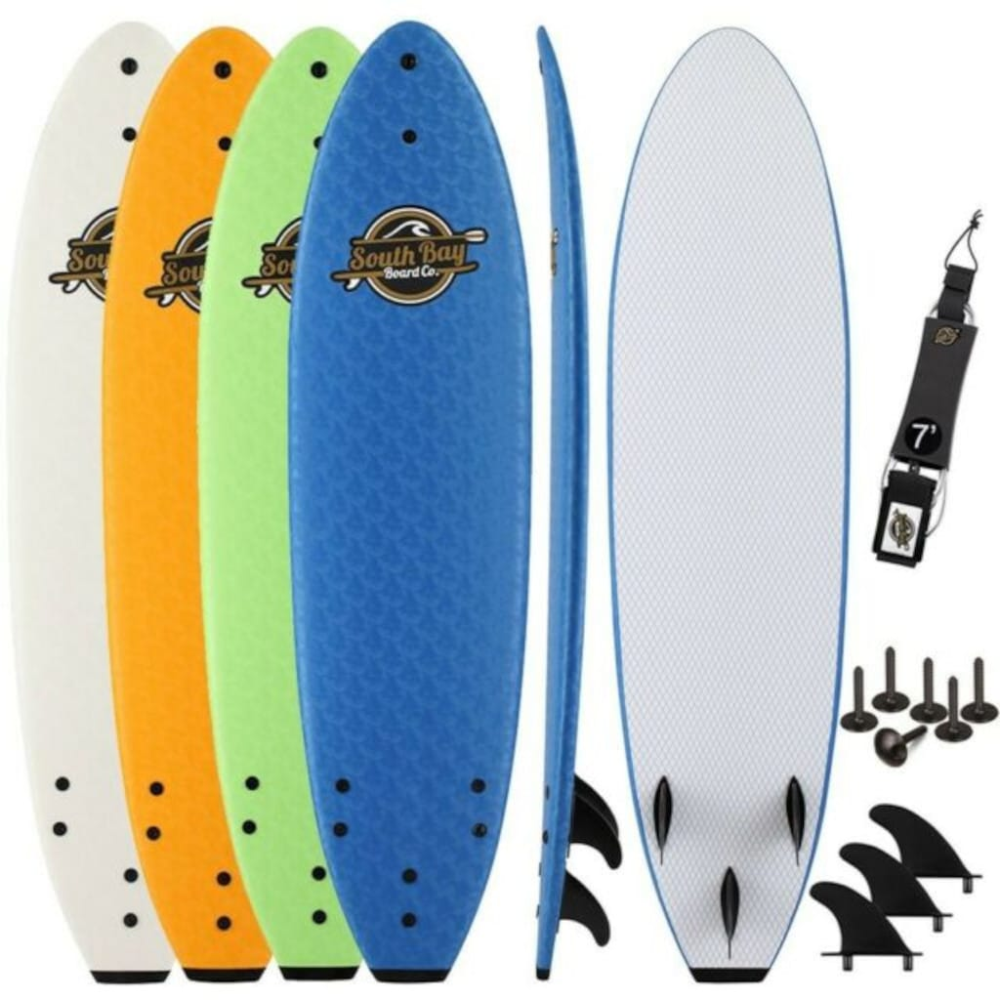
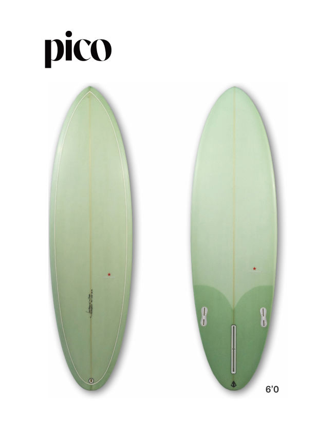
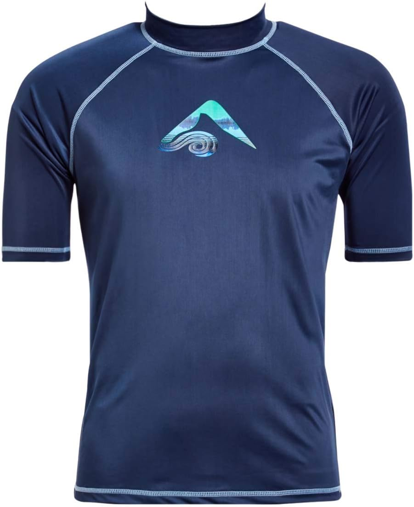
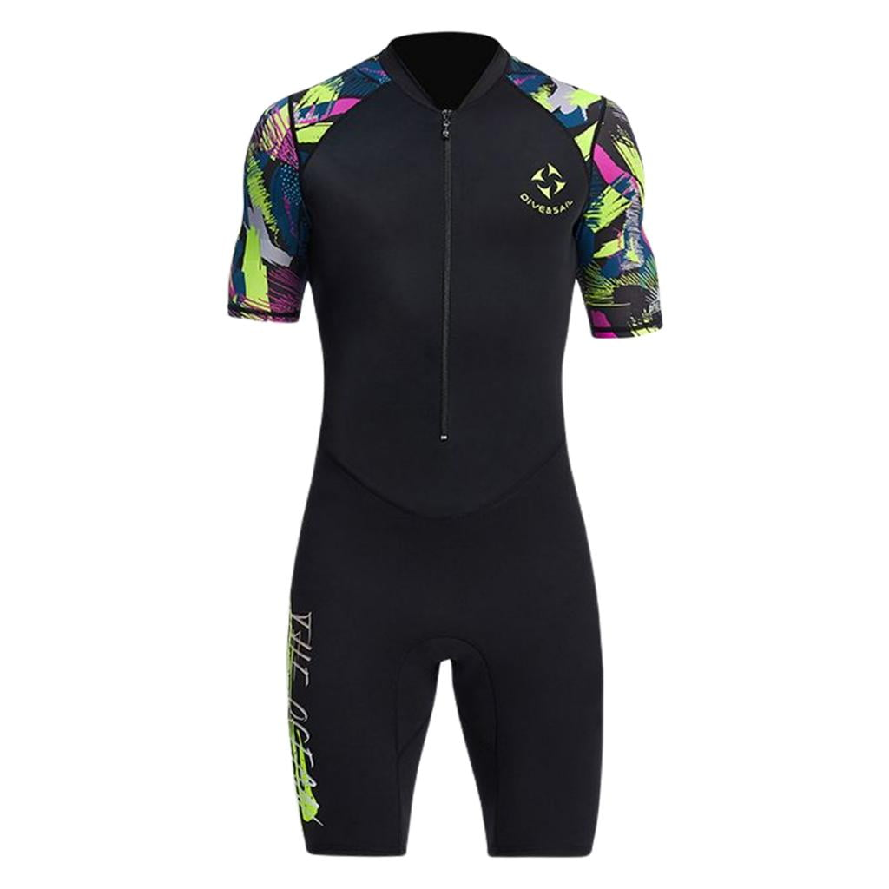
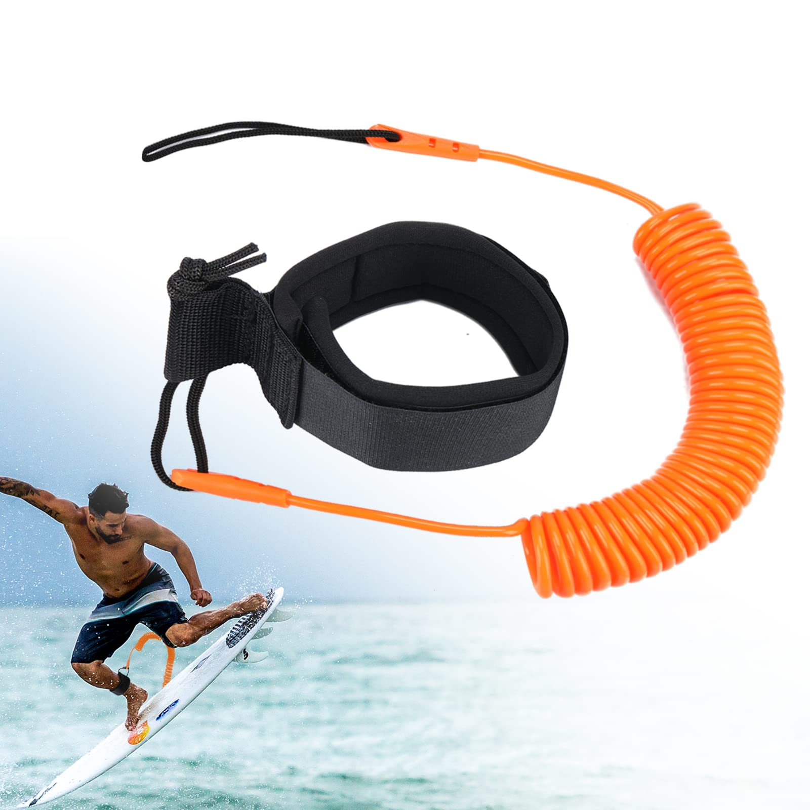

El torneo reunirá a lo mejor del talento costarricense durante las cinco fechas que se competirán de febrero a junio de 2025. Además del gran impacto deportivo en los jóvenes de las comunidades costeras, el Circuito Nacional de Surf Banco LAFISE 2025 representa un beneficio económico en cada región sede del torneo, al movilizar al menos unas 4 mil personas entre atletas, familiares, patrocinadores, aficionados del surf y turistas.
Calendario de Fechas:
Playa Cieneguita (Limón): 15 y 16 de febrero (2000 puntos)
Santa Teresa (Cóbano): 15 y 16 de marzo (1500 puntos)
Playa Guiones (Nosara): 12 y 13 de abril (1500 puntos)
Playa Dominical: 24 y 25 de mayo (1500 puntos)
FINAL Playa Hermosa (Jacó): 20, 21 y 22 de junio (2000 puntos)
Productos para Surf
Tabla de Surf Clásica

Tabla versátil para todo tipo de olas.
Precio: ₡180,000
Tabla Shortboard

Ideal para maniobras rápidas y olas potentes.
Precio: ₡220,000
Rashguard (camiseta de surf)

Protección solar y comodidad en el agua.
Precio: ₡18,000
Traje de neopreno corto

Perfecto para aguas templadas.
Precio: ₡45,000
Leash para tabla de surf

Evita perder tu tabla en el mar.
Precio: ₡8,000
Horarios de Tienda Física
Día
Horario
Lunes a Viernes
9:00 am - 6:00 pm
Sábado
10:00 am - 4:00 pm
Domingo
Cerrado
Lugares para Surfear
Playa Hermosa (Pacífico Central)
Esta playa, cerca de Jacó, es famosa por sus olas potentes y es ideal para surfistas experimentados que buscan desafíos y menos multitudes.
Playa Pavones (Pacífico Sur)
Ubicada en la provincia de Puntarenas, es conocida por sus olas izquierdas largas y consistentes, algunas de las más largas del mundo.
Roca Bruja (Guanacaste)
Un lugar de surf de clase mundial, ubicado dentro del Parque Nacional Santa Rosa, es ideal para surfistas avanzados con olas desafiantes y entorno natural impresionante.
Playa Grande (Guanacaste)
Una playa extensa con olas consistentes y grandes, popular entre surfistas experimentados y adecuada para el aprendizaje.
Salsa Brava (Caribe)
Ubicada en Puerto Viejo, es famosa por sus olas poderosas y tubos impresionantes, considerada una de las playas más desafiantes de Costa Rica para surfistas.
Contacto
Noticias
Federación Costarricense de Surf impulsa eventos de masificación en Guanacaste, Puntarenas y Limón
La Federación Costarricense de Surf anuncia una serie de tres eventos gratuitos para el segundo semestre del 2025, dirigidos a fomentar la formación técnica, competitiva y comunitaria de los surfistas juveniles en Guanacaste, Puntarenas y Limón.
Convocatoria selección nacional open para el Mundial ISA El Salvador 2025
La selección nacional de surf de Costa Rica se alista para competir en el Mundial Open de la ISA El Salvador 2025, que se realizará del 5 al 14 de setiembre en las playas La Bocana y El Sunzal.
Darshan Antequera triunfa en Panamá y escala al segundo lugar del ranking latinoamericano
El surfista costarricense Darshan Antequera ganó los dos torneos del ALAS Global Tour en Panamá, logrando el mejor resultado internacional de su carrera y subiendo al segundo lugar del ranking latinoamericano.
Torneos en Panamá, Nicaragua y Santa Teresa llenan el calendario de los surfistas ticos
Agosto será un mes clave para los surfistas costarricenses que buscan el título latinoamericano, con fechas del ALAS Global Tour en Panamá, Nicaragua y Santa Teresa.
Lia Díaz es subcampeona panamericana de longboard
Lia Díaz, surfista de Playa Negra, Guanacaste, obtuvo la medalla de plata en el Panamericano de Surf Guatemala 2025, logrando la primera medalla para Costa Rica en la disciplina de longboard.
Siete ticos compitieron en el inicio de los Juegos Panamericanos de Surf 2025
Los Juegos Panamericanos de Surf Guatemala 2025 iniciaron con la participación de siete surfistas costarricenses en las categorías de surf masculino y bodyboard, destacando el talento nacional en aguas internacionales.